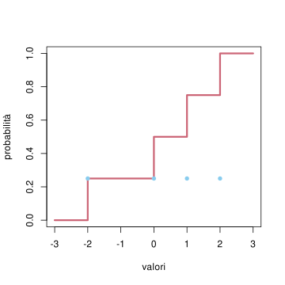
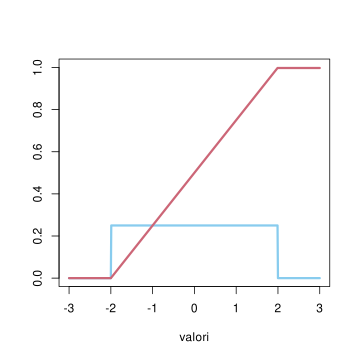
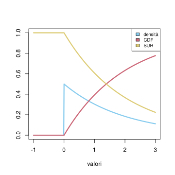
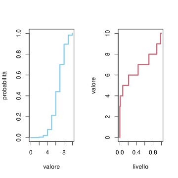
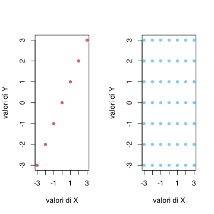

In questo capitolo studiamo le principali quantità che permettono di sintetizzare la legge di una variabile aleatoria (reale o vettoriale), concentrandoci in particolare sugli indicatori di posizione (o centralità) di dispersione (o variabilità) e di correlazione.
Nella Sezione Sezione 4.1, introduciamo la funzione di ripartizione (o distribuzione cumulata) e la funzione di sopravvivenza per variabili aleatorie reali.
La Sezione Sezione 4.2 è dedicata all’inversa della funzione di ripartizione, la funzione quantile, che permette di definire anche il concetto di mediana di una distribuzione.
Nella Sezione Sezione 4.3 definiamo il valor medio, uno degli indicatori di posizione più importanti ed utilizzati, anche per via delle proprietà che ne agevolano il calcolo in molte situazioni.
La Sezione Sezione 4.4 presenta l’indice di variabilità più comune, la varianza (e la deviazione standard) con le sue proprietà.
Nella Sezione Sezione 4.5 introduciamo la covarianza tra due variabili aleatorie, passando così dal caso reale al caso vettoriale.
La Sezione Sezione 4.6 presenta il concetto generale di momento di una variabile per approssimare il calcolo dei valori attesi, e la funzione generatrice dei momenti (collegata alla trasformata di Laplace della densità)
La Sezione Sezione 4.7 si occupa invece della trasformata di Fourier della densità, che è detta in questo contesto funzione caratteristica di una variabile aleatoria.
Concludiamo il capitolo accennando nella Sezione Sezione 4.8 al concetto di entropia di una densità, che è fondamentale in molti ambiti della teoria dell’informazione, ma può essere utile anche come indicatore di dispersione o per stabilire opportune probabilità a priori (tramite il principio di massima entropia).
4.1 Funzione cumulativa
Data una variabile aleatoria \(X\) a valori in \(\R\), abbiamo descritto efficacemente la sua legge (rispetto ad una informazione nota \(I\)) tramite la densità discreta oppure continua.
In molti casi si è semplicemente interessati a conoscere la probabilità che \(X\) assuma valori “grandi”.
Per fare un esempio dal mondo della finanza, sia \(X\) la quantità di denaro che un investitore potrebbe guadagnare (se positiva) o perdere (se negativa) in una fissata data futura, a seconda dell’andamento del mercato: di sicuro l’interesse principale per l’investitore sarà di valutare la probabilità di \(\cur{ X > x}\) (per capire quanto guadagnerà), oppure la negazione \(\cur{X \le x}\) (per capire quanto perderà).
Partendo da questa osservazione, si introducono due funzione strettamente collegate:
la funzione di ripartizione (o funzione cumulativa, in inglese cumulative distribution function, \(\CDF\),) di \(X\), definita come la funzione che ad ogni possibile valore \(x \in \R\) associa la probabilità che \(X \le x\), \[ x \mapsto \CDF_X(x) = P(X \le x), \] a volte indicata anche semplicemente come \(F_X\), ma è una notazione poco evocativa che eviteremo.
la funzione di sopravvivenza (in inglese survival function) di \(X\), definita invece come la funzione \[ x \mapsto \SUR_X(x) = P(X>x),\] a volte indicata anche solo \(S_X\) (ma eviteremo questa notazione).
Osservazione. In entrambe le definizioni sopra abbiamo sottointeso la dipendenza della probabilità dall’informazione nota \(I\). Volendo invece indicare la dipendenza dall’informazione \(I\), possiamo scrivere \(\CDF_{X|I}\) oppure \(\SUR_{X|I}\).
Vi è chiaramente un legame tra le due funzioni, essendo \(\cur{X \le x}\) e \(\cur{X>x}\), fissato un qualsiasi \(x \in \R\), un sistema di alternative. Ne segue che, per ogni \(x \in \R\), \[ \CDF_X(x) + \SUR_X(x) = 1,\] quindi \(\CDF_X\) o \(\SUR_X\) contengono la stessa informazione sulla legge di \(X\).
Se la densità (discreta o continua) di \(X\) è nota, è molto semplice calcolare la \(\CDF_X\), ricordando che \(P(X \le x) = P(X \in (-\infty, x] )\) si ottiene sommando (o integrando) la densità su tutti i possibili valori di \(X\) che sono minori o uguali ad \(x\): \[ \CDF_X(x) = \begin{cases}
\sum_{ z \le x} P(X = z ) & \text{se $X$ ha densità discreta,}\\
\int_{-\infty}^x f(z) d z & \text{ se $X$ ha densità continua.}\end{cases} (\#eq:CDF-density)\]
Possiamo quindi intepretare (almeno nel caso continuo) la \(\CDF_X(x)\) come l’area del sottografico della densità da \(-\infty\) fino ad \(x\).
Analogamente, per la funzione di sopravvivenza, si somma (o integra) sui valori strettamente maggiori di \(x\): \[ \SUR_X(x) = \begin{cases}
\sum_{ z > x} P(X = z ) & \text{se $X$ ha densità discreta,}\\
\int_x ^{+\infty} f(z) d z & \text{ se $X$ ha densità continua,}\end{cases}\]
e quindi corrisponde all’area del sottografico della densità (continua) da \(x\) a \(+\infty\).
Si consideri una variabile aleatoria \(X\) sui valori \(E = \cur{-2,1,0,2}\) avente densità uniforme \[ P(X =i ) = 1/4.\] Il grafico della sua densità discreta e della \(\CDF_X\), ottenuto tramite la formula sopra (nel caso discreto) è rappresentata in figura:
# possibili valori e densità discretavalori_X <-c(-2,0,1,2)densita_X <-rep(1/4, 4)# iniziamo con un grafico vuoto:plot(NULL, xlab='valori', ylab='probabilità', ylim=c(0,1), xlim=c(-3,3))#per avere un plot su un intervallo ad esempio (-3,3), aggiungiamo artificialmente i due valori estremi con densità 0 (questo rende più semplice fare il plot della CDF come funzione a gradini)valori_X <-c(-3, valori_X, 3)densita_X <-c(0, densita_X, 0)# per ottenere la funzione di ripartizione nei punti valori_X usiamo il comando cumsum().CDF_X <-cumsum(densita_X)# aggiungiamo il grafico della CDF con il comando lines()lines(valori_X, CDF_X, type='s', col=miei_colori[2], lwd=3)# infine aggiungiamo i punti corrispondenti alla densità discretapoints( valori_X[2:5], densita_X[2:5], col=miei_colori[1], pch=16, lwd=3)

densità uniforme discreta e CDF
Ad essere precisi, il grafico della \(CDF_X\) non dovrebbe rappresentare i segmenti verticali nei punti di salto (il valore della \(\CDF_X\) è soltanto l’estremo più alto).
Si consideri una variabile aleatoria \(X\) avente densità uniforme continua nell’intervallo \([-2,2]\), ossia, per \(x \in [-2,2]\), \[ p(X =x ) = 1/4.\] Il grafico della sua densità continua e della \(\CDF_X\), ottenuto tramite la formula sopra (nel caso continuo) è rappresentata in figura:
# possibili valori e densità continuadeltax =0.01valori_X <-seq(-3,3, by=deltax)densita_X <- valori_X*0+ (valori_X>-2& valori_X <2)*1/4# plottiamo prima i valori della densità plot(valori_X, densita_X, type='l', col=miei_colori[1], xlab='valori', ylab='', ylim=c(0,1), xlim=c(-3,3), lwd=3)# per ottenere la funzione di ripartizione nei punti valori_X usiamo il comando cumsum() moltiplicando poi per deltax (per approssimare l'integrale come somma di Riemann)CDF_X <-cumsum(densita_X)*deltax#aggiungiamo quindi con il comando lines()lines(valori_X, CDF_X, type='l', col=miei_colori[2], lwd=3)

densità uniforme continua e CDF
Osservando i grafici ottenuti, deduciamo alcune semplici proprietà della \(\CDF\):
vale \(\CDF_X(x) \in [0,1]\), essendo una probabilità.
la funzione \(x \mapsto \CDF_X(x)\) è crescente (ma non strettamente): se \(x < z\), allora \(\CDF_X(x) \le \CDF_X(z)\), per la monotonia della probabilità: ogni volta che \(\cur{X \le x}\) è vero, segue che \(\cur{X \le z}\) è pure vero.
vale \(\CDF_X(-\infty) = 0\) e \(\CDF_X(+\infty)=1\) (nel senso di limiti opportuni): negli esempi si ha addirittura \(\CDF_X(-3)=0\) e \(\CDF_X(3)=1\), ma questo dipende dalle densità considerate.
Nel caso di variabili con densità discreta, la \(\CDF_X\) è una funzione costante a tratti, mentre nel caso di variabili con densità continua, la \(\CDF_X\) è una funzione continua.
Per la funzione \(\SUR\), valgono proprietà analoghe, fatte le opportune considerazioni: in particolare, la funzione è decrescente e vale \(\SUR_X(-\infty) = 1\) mentre \(\SUR_X(+\infty) = 0\).
Si consideri una variabile aleatoria \(X\) con densità esponenziale di parametro \(\lambda>0\). Si trova che \[ \SUR_X(x) = \int_x^\infty \lambda e^{-\lambda z} d z = e^{-\lambda x},\] mentre \[ \SUR_X(x) = 1- e^{-\lambda x}.\]. Nel caso \(\lambda = 1/2\), il grafico della densità, funzione di ripartizione e di sopravvivenza sono tracciati in figura.
deltax <-0.01valori_X <-seq(-1, 3, by=deltax)lambda <-1/2# usiamo direttamente i comandi dexp() e pexp() per la densità e CDF esponezialedensita_X <-dexp(valori_X, lambda)CDF_X <-pexp(valori_X, lambda)SUR_X <-1-CDF_Xplot( valori_X, densita_X, type='l', col=miei_colori[1], ylim=c(0,1), xlab='valori', ylab='', lwd=3)lines( valori_X, CDF_X, col=miei_colori[2], lwd=3, )lines( valori_X, SUR_X, co=miei_colori[3], lwd=3)legend('topright', fill=miei_colori[1:3], c("densità", "CDF", "SUR"), cex=0.8)

densità, \(\CDF_X\) e \(\SUR_X\) di una variabile \(X\) con densità esponenziale di parametro \(\lambda=1/2\).
È naturale a questo punto porsi la seguente domanda: possiamo ricostruire la densità di \(X\) (discreta o continua) se disponiamo della \(\CDF_X\)? la risposta è affermativa e basta invertire la ?eq-CDF-density. Nel caso discreto, si trova semplicemente che la densità discreta è non nulla solo nei valori \(x\in \R\) in cui la \(\CDF_X(x)\) ha un salto, e il valore della densità in quel punto è proprio l’ampiezza del salto. Nel caso di densità continua, per invertire la formula \[ \int_{-\infty}^x p(X=z)dz = \CDF_X(x)\] è sufficiente applicare il teorema fondamentale del calcolo integrale, e quindi derivare la \(\CDF_X\) per ottenere la densità: \[ \frac{d}{dx} \CDF_X(x) = p(X=x).\] (nei punti in cui \(\CDF_X\) è derivabile)
Per la \(\SUR_X\), è sufficiente cambiare di segno alle quantità ottenute, ossia intepretare l’ampiezza assoluta dei salti nel caso discreto, mentre, nel caso continuo, si ottiene \[ - \frac{d}{dx} \SUR_X(x) = p(X=x).\]
Osservazione. Vi sono variabili aleatorie \(X\) né discrete né continue. In tal caso si può ancora mostrare che la conoscenza della \(\CDF_X\) (o la \(\SUR_X\)) determina completamente la legge di \(X\).
4.1.1 Esercizi
Sia \(X\) una variabile aleatoria reale con densità continua pari, ossia tale che \(p(X=x) = p(X =-x)\) per ogni \(x \in \R\). Mostrare che \(\CDF_X(x) = \SUR_X(-x)\) per ogni \(x \in \R\).
Tramite il comando \(R\)pbinom() rappresentare graficamente la \(\CDF\) di una variabile \(X\) con densità binomiale di parametri \((10, 1/4)\). Usando il comando phyper() si faccia lo stesso per una densità ipergeometrica (si scelgano a piacere i parametri).
Può la funzione \(x\mapsto \sin(x)\), \(x \in [0, \pi/2]\) essere la \(\CDF\) di qualche variabile aleatoria?
4.2 Mediana e quantile
Ricordiamo che il nostro obiettivo in questo capitolo è di definire delle quantità che riassumano la legge di una variabile \(X\) in modo semplice ma efficace. La \(\CDF_X\) da questo punto di vista contiene troppa informazione, essendo praticamente equivalente ad avere la densità di \(X\). Per ridurre tale informazione in modo efficace, ci si può tuttavia limitare ad alcuni valori (della variabile \(X\)) speciali determinati tramite la \(\CDF_X\), o meglio la sua inversa.
Il più semplice da definire è la mediana di \(X\), definita come un valore \(\bar{x} \in \R\), se esiste, tale che \[ \CDF_X(\bar{x}) = \frac 1 2.\] Ricordando la definizione di \(\CDF_X\), significa che \[ P(X\le \bar{x}) = P(X> \bar{x}) =\frac 1 2,\] ossia \(\bar{x}\) è scelta in modo che le due alternative \(\cur{X \le \bar{x}}\) e \(\cur{X > \bar{x}}\) abbiano la stessa probabilità. La mediana è quindi un buon indicatore di “centralità” per una variabile aleatoria \(X\), simile alla moda, ma in alcuni casi più utile.
Ad esempio, se la densità di \(X\) è uniforme (diciamo su un insieme \(E\) con un numero pari di valori), significa che metà dei valori possibili di \(X\) sono \(\le \bar{x}\), mentre i rimanenti sono \(>\bar{x}\). In questo caso invece una moda è uno qualsiasi dei valori di \(E\).
Si consideri una variabile \(X\) uniforme sui \(10\) valori \(E = \cur{0, 0.1, 0.15, 0.3, 0.4, 0.7, 0.73, 0.9, 0.95, 1.1}\). Una mediana per \(X\) è \(\bar{x}=0.4\), ma anche un qualsiasi valore compreso tra \(0.4\) e \(0.7\) (escluso)
Nel caso di una variabile esponenziale di parametro \(\lambda\), si trova che \[ 1- e^{-\lambda \bar{x}} = \frac 1 2\quad \leftrightarrow \quad \lambda \bar{x} = \log(2),\] ossia \[\bar{x} = \frac{\log(2)}{\lambda}.\] In questo caso la mediana è unica. Osserviamo che la dipendenza da \(\lambda\) (a denominatore) è in linea con le osservazioni fatte nel capitolo precedente sulla dipendenza da \(\lambda\) della densità.
La mediana tuttavia presenta alcuni problemi: non necessariamente esiste sempre, oppure può non essere unicamente determinata dall’equazione sopra, infine non è facile calcolarla (si tratta di risolvere un’equazione).
Per risolvere i primi due problemi, si introduce una inversa generalizzata della funzione \(\CDF_X\), detta funzione quantile di \(X\). In effetti, l’equazione che definisce la mediana, se \(\CDF_X\) è invertibile, darebbe \[ \bar{x} = \CDF_X^{-1}(1/2).\] Il fatto è che la \(\CDF_X\) non è invertibile (si pensi al caso di variabili discrete, in cui è costante a tratti): perciò si introduce la funzione quantile di \(X\) come la funzione \[ q_X : (0,1) \to \R\] che ad ogni possibile \(\alpha \in (0,1)\) (detto anche livello del quantile) associa il valore \[ q_X(\alpha) = \min\cur{ x \in \R \, : \, \CDF_X(x) \ge \alpha},\] detto appunto, quantile di \(X\) di livello \(\alpha\). Si può dimostrare (noi non lo faremo) che vale, per ogni \(\alpha \in (0,1)\). \[ \CDF_X( q_X(\alpha)) \ge \alpha\], mentre se \(X\) ha densità continua, allora \[ \CDF_X( q_X(\alpha)) = \alpha.\]
La funzione quantile delle densità notevoli è già impostata in R, tramite il prefisso q (in contrasto con p della CDF e d per la densità). Plottiamo ad esempio il quantile della densità binomiale (discreta) e quello della densità esponenziale (continua).
n=10p=2/3valori_X =0:nCDF_X =pbinom(valori_X, n, p)delta_alpha =0.01alpha =seq(0, 1, by=delta_alpha)quantile_X =qbinom(alpha, n, p)# per visualizzare i due plot uno accanto all'altro usiamo la funzione par()par(mfrow=c(1,2))plot(valori_X, CDF_X, type='s', col=miei_colori[1], xlab='valore', ylab='probabilità', lwd=3)plot(alpha, quantile_X, type='S', col=miei_colori[2], xlab='livello', ylab='valore', lwd=3)

plot di \(\CDF_X\) per \(X\) binomiale (a sinistra) e quantile funzione quantile (a destra)
Nel caso generale, si definisce quindi la mediana di \(X\) come il valore \(\bar{x} = q_X(1/2)\). Altri valori speciali della funzione quantile sono i quartili, corrispondenti ad \(\alpha \in \cur{ 1/4, 2/4, 3/4}\) (detti il primo, secondo e terzo quartile), i decili e i percentili, corrispondenti rispettivamente ai livelli \(\alpha = k/10\), oppure \(\alpha=k/100\). Affiancare alla mediana i quartili permette di descrivere la variabilità della \(X\) (ossia indicare quanto i valori siano tipicamente vicini alla mediana).
4.2.1 Esercizi
Calcolare e plottare la funzione quantile di una variabile \(X\) con densità uniforme (continua) su \((a,b)\) (si può eventualmente usare la funzione qunif()).
Calcolare e plottare la funzione quantile di una variabile \(X\) con densità (Cauchy) \(p(X=x) \propto 1/(x^2+1)\) (si veda il comando qcauchy()).
Sia \(X\) una variabile aleatoria a valori in \(\R\) e sia \(g: \R \to \R\) continua e strettamente crescente. Che legame c’è tra \(q_X\) e \(q_{g(X)}\)?
4.3 Valor medio
La mediana e le sue generalizzazioni come i quartili, decili ecc., sono efficaci per sintetizzare le principali caratteristiche della legge di una variabile aleatoria a valori reali. Tuttavia il loro calcolo (teorico) non è molto agevole e pure la generalizzazione al caso di variabili vettoriali non è del tutto evidente. In questa sezione introduciamo invece uno degli indicatori maggiormente usati, il valor medio (anche detta media, valore atteso o speranza matematica, in inglese expectation o expected value) di una variabile aleatoria \(X\) a valori in \(\R\), rispetto all’informazione \(I\). La ragione principale per preferire il valor medio rispetto alla mediana è che esso gode di molteplici proprietà, di cui la principale è la linearità, che ne rendono il calcolo agevole in molte situazioni. Inoltre, si generalizza in modo immediato al caso vettoriale.
Il valor medio di \(X\) consiste in una media aritmetica dei possibili valori di \(X\), ma ponderata, cioè pesata, tramite la densità (discreta o continua).
Il valor medio di una variabile aleatoria \(X\) a valori in \(\R\), condizionato ad una informazione nota \(I\) rispetto alla quale \(X\) ammette densità (discreta o continua) è definito come il numero reale \[ \E{ X | I} = \begin{cases} \sum_{x \in \R} x P(X = x|I ) & \text{se $X$ ha densità discreta,}\\
\int_{-\infty}^\infty x p(X=x|I) d x & \text{se $X$ ha densità continua.}\end{cases}\]
La notazione \(\E{X | I}\) ricalca quella di probabilità \(P(X=x|I)\), e spesso si evita di specificare l’informazione nota \(I\).
Osservazione. Affinché la serie o l’integrale siano ben definiti, supporremo sempre (tacitamente) che convergano in senso assoluto, ossia \[ \sum_{x \in \R} |x| P(X = x|I ) < \infty \text{ oppure } \int_{-\infty}^\infty |x| p(X=x|I) d x <\infty.\] questo evita opportunamente dei comportamenti “patologici” nei passaggi al limite. Se le serie sopra non convergono, diremo semplicemente che il valor medio non esiste finito (o non è ben definito). Diversamente dalla mediana, che esiste sempre (purché si definisca come \(q_X(1/2)\)), il valor medio potrebbe non esistere.
La definizione che abbiamo dato di valor medio ricalca quella fisica di centro di massa per una certa distribuzione di massa, solamente che al posto della densità di massa vi è la densità di probabilità. In effetti, per molte applicazioni in fisica il centro di massa fornisce un utile riassunto per una distribuzione di massa.
Il calcolo analitico di un valor medio può essere un esercizio piuttosto complicato. Dal punto di vista numerico invece è immediato (se si dispone della densità o di una sua approssimazione).
Sia \(X\in \cur{0,1}\) la variabile indicatrice di un evento \(A\), ossia \(\cur{X=1} = A\). La legge di \(X\) è Bernoulli di parametro \(p = P(X=1|I) = P(A|I)\) Allora, usando la definizione nel caso discreto, \[ \E{X|I} = 0\cdot P(X= 0|I) + 1 \cdot P(X=1|I) = P(X=1|I) = P(A|I) = p,\] quindi il valor medio di una (variabile con) densità discreta Bernoulli di parametro \(p\) è proprio \(p\). Osserviamo che, eccetto i casi limite \(p =0\), oppure \(p=1\), il valor medio non è uno dei possibili valori di \(X\).
Sia \(X\) una variabile aleatoria uniforme continua sull’intervallo \((a,b)\). Allora il valor medio di \(X\) è \[ \int_a^b x \frac{1}{b-a} dx = \frac{( b^2-a^2)}{2 (b-a)} = \frac{a+b}{2},\] ossia il punto medio dell’intervallo. Notiamo che in questo caso il valor medio è uno dei possibili valori e coincide con la mediana.
Sia \(X\) una variabile aleatoria con densità binomiale di parametri \(n=10\), \(p=1/3\). Per calcolare il valor medio usando la definizione, bisogna sommare \[ \sum_{k=0}^{10} k {10 \choose k} \frac{1}{3^{k}} \bra{\frac{2}{3}}^{10-k}.\] Vedremo più avanti un approccio diverso sfruttando le proprietà di linearità del valor medio. Tuttavia è anche semplice calcolarlo numericamente:
n <-10p <-1/3valori_X <-0:ndensita_X <-dbinom(valori_X, n, p)(valor_medio_X <-sum(valori_X * densita_X))
[1] 3.333333
Osservazione. Come anticipato, ci limiteremo al calcolo (esplicito) del valor medio nei casi in cui \(X\) ammetta densità discreta o continua. Tuttavia si deve notare che è possibile dare una definizione generale, che non usa la densità. Una possibile è la seguente (va però mostrato che le definizioni coincidano): \[ \E{X |I} = \int_0^\infty P(X>x|I) d x - \int_{-\infty}^0 P(X <x) dx, \] supponendo che entrambi gli integrali convergano.
Veniamo alle proprietà principali del valor medio, riassunte nella seguente proposizione. Accenniamo alle dimostrazioni nei casi semplici di variabili discrete (o continue).
La proprietà fondamentale è l’analoga della formula di disintegrazione per la probabilità, che possiamo scrivere in termini di sistemi di alternative o variabili aleatorie (discrete o continue).
Sia \(X\) una variabile aleatoria reale e sia \(Y \in E\) una variabile aleatoria. 1. Se \(Y\) ha densità discreta, vale \[ \E{X|I}= \sum_{y \in E} \E{X|I, Y=y} P(Y=y|I),\] 2. Se \(E = \R^d\) e \(Y\) ha densità continua, vale \[ \E{X|I} = \int_{\R^d }\E{X|I, Y=y} p(Y=y|I) dy.\]
Dimostrazione. La dimostrazione di questa proprietà è immediata, almeno nel caso discreto, purché si ammetta di poter scambiare le serie (questo passaggio tecnico richiede appunto la convergenza assoluta): omettendo di specificare l’informazione \(I\), vale \[ \begin{split}
\E{X} & = \sum_{x \in \R} x P(X=x) = \sum_{x \in \R} x \sum_{y\in E} P(X=x|Y=y)P(Y=y)\\
&\sum_{y \in E} \bra{ \sum_{x \in \R} x P(X=x|Y=y)}P(Y=y)\\
& \sum_{y \in E} \E{X | Y=y} P(Y=y).
\end{split}\] Similmente nel caso continuo, scambiando gli integrali (nei casi misti invece si scambiano serie e integrali).
Grazie alla formula di disintegrazione, possiamo agevolmente dimostrare ulteriori proprietà.
Siano \(X\), \(Y\) variabili aleatorie reali, e siano \(a\), \(b\), \(c \in \R\) (non aleatorie). Allora
(linearità) vale \(\E{aX|I} = a \E{X|I}\) e \(\E{X+Y|I }= \E{X|I} + \E{Y|I}\).
(monotonia) se \(P( X \ge Y|I) = 1\), allora \(\E{X|I} \ge \E{Y|I}\). In particolare, se \(P(X\in[a,b]|I) = 1\), allora \(\E{X|I} \in [a,b]\).
(diseguaglianza di Markov) se \(X\) è a valori non-negativi (rispetto all’informazione \(I\)), allora per ogni \(c>0\), \[ P(X > c|I) \le \frac{ \E{X|I}}{c}.\]
Dimostrazione. Limitiamoci al caso di variabili con densità discreta.
Per mostrare la linearità, usiamo la disintegrazione con \(X+Y\) invece di \(X\) e la variabile congiunta \((X,Y)\) invece di \(Y\). Troviamo (omettiamo \(I\) per brevità) \[ \begin{split} \E{X+Y} & = \sum_{(x,y)\in \R \times \R} \E{X+Y| X=x, Y=y} P(X=x, Y=y) \\
& \sum_{(x,y)\in \R \times \R} (x+y) P(X=x, Y=y)\\
&\sum_{x \in \R } x \sum_{y \in \R } P(X=x, Y=y) + \sum_{y \in \R } y \sum_{x \in \R } P(X=x, Y=y) \\
& \sum_{x \in \R} x P(X=x) + \sum_{y \in \R} y P(Y=y)\end{split}\] dove abbiamo usato la formula per la densità delle marginali a partire dalla densità della variabile congiunta. La dimostrazione di \(\E{aX}= a \E{X}\) è analoga (disintegrando rispetto ad \(X\)).
Avendo dimostrato la linearità del valor medio, possiamo porre \(Z = X-Y\) e limitarci a dimostarre \(\E{Z} \ge 0\) partendo dall’ipotesi che \(P(Z\ge 0) = 1\). Ma allora nella definizione (sempre nel caso discreto) possiamo ridurre la somma agli \(z \ge 0\) (visto che \(P(Z = z) = 0\) se \(z<0\)),e quindi \[ \E{Z}= \sum_{z \in \R} z P(Z= z) = \sum_{z \ge 0} z P(Z=z) \ge 0,\] essendo ciascun termine \(z P(Z=z)\) positivo.
Consideriamo il sistema di alternative \(\cur{X<c}\), \(\cur{X \ge c}\) e disintegriamo: \[\begin{split} \E{X} & =\E{X|X<c} P(X<c) + \E{X| X \ge c} P(X \ge c)\\
& \ge \E{X| X \ge } P(X \ge c) \\
& \ge c P(X \ge c),\end{split}\] dove abbiamo prima usato che \(\E{X|X<c} \ge 0\), essendo \(X \ge 0\) (era rispetto all’informazione \(I\), quindi a maggior ragione sapendo pure che \(X<c\)), e poi che \(\E{X| X \ge c} \ge c\). Dividendo per \(c\) ambo i membri si ottiene la diseguaglianza di Markov.
Osservazione. La diseguaglianza di Markov permette di ottenere un collegamento tra valor medio e mediana (più in generale i quantili). Scegliamo infatti \(c= q_X(\alpha)\). Allora, supponendo ad esempio che \(X\) abbia densità continua, \[P(X \ge q_X(\alpha) )= 1-\CDF_X(q_X(\alpha)) = 1-\alpha,\] quindi la diseguaglianza implica che (se \(X\ge 0\),) \[ 1-\alpha \le \frac{ \E{X}}{q_X(\alpha)}.\] Ad esempio, con \(\alpha = 1/2\) si trova che \[ q_X(1/2) \le 2 \E{X}.\]
La formula di disintegrazione ha due ulteriori conseguenze che vale la pena di osservare in generale. La prima è una formula per il valor medio di una variabile composta \(g(X)\), qualora la densità (discreta o continua) di \(X\) (non necessariamente reale) sia nota. Questa formula è molto utile, perché permette di evitare il calcolo della densità di \(g(X)\), se si è solamente interessati al suo valor medio.
Sia \(X \in E\) una variabile aleatoria che ammetta densità discreta oppure continua (in tal caso \(E = \R^d\)). Allora, se \(g: E \to \R\), si ha \[ \E{g(X)|I} = \begin{cases} \sum_{x \in E} g(x) P(X= x|I ) & \text{se $X$ ha densità discreta,}\\
\int_{E} g(x) p(X= x|I) dx & \text{se $X$ ha densità continua.}
\end{cases}\]
Dimostrazione. La dimostrazione segue dalla formula di disintegrazione. Ad esempio, nel caso discreto, \[ \E{g(X)|I} = \sum_{x \in E} \E{g(X)|I, X=x} P(X=x|I) = \sum_{x \in E} g(x) P(X=x|I),\] perché sapendo \(\cur{X=x}\) si ottiene di conseguenza che \(g(X)\) è costante e pari a \(g(x)\).
Sia \(X\) una variabile con densità discreta binomiale di parametri \(n=20\), \(p=1/4\). Per calcolare il valor medio di \(g(X) = X^3\) non è necessario determinare la densità discreta di \(g(X)\), ma si può usare la formula del valor medio di una variabile composta: \[ \E{X^3} = \sum_{k=0}^{20} k^3 {20 \choose k} \frac{1}{4^k}\bra{\frac{3}4}^{20-k}.\] Possiamo calcolarlo numericamente (vedremo nella Sezione Sezione 4.6 un metodo analitico).
n <-20p <-1/4valori_X <-0:ndensita_X <-dbinom(valori_X, n, p)(valor_medio_X <-sum(valori_X**3* densita_X))
[1] 183.125
L’ultima proprietà del valor medio che enunciamo riguarda invece il prodotto di variabili indipendenti.
Siano \(X\), \(Y\) variabili aleatorie reali indipendenti (rispetto ad una informazione \(I\)). Allora \[ \E{ XY |I} = \E{X|I} \E{Y|I}.\]
Dimostrazione. Disintegrando rispetto alla variabile \(Y\) (che supponiamo discreta, per semplicità), \[ \begin{split} \E{ XY |I} & = \sum_{y \in \R} \E{XY|I, Y=y} P(Y=y|I)\\
& \sum_{y \in \R} \E{X|I, Y=y} y P(Y=y|I)\\
& \E{X|I}\sum_{y \in \R} y P(Y=y|I) = \E{X|I}\E{Y|I},\end{split}\] dove abbiamo usato il fatto che, essendo \(X\) indipendente da \(Y\), \[ \E{X|I, Y=y} = \sum_{x \in \R} x P(X=x|I, Y=y) = \sum_{x\in \R} x P(X=x|I) = \E{X|I},\] ossia il valor medio di \(X\), pur conoscendo esattamente \(Y\), non cambia.
Concludiamo con l’estensione del concetto di valor medio al caso di variabili aleatorie vettoriali.
Data una variabile \(X = (X_1, \ldots, X_d)\) a valori in \(\R^d\), si definisce il vettore dei valor medi (o vettore delle medie) di \(X\) come il vettore in \(\R^d\), \[ \E{X|I} =( \E{X_1|I}, \ldots, \E{X_d|I}).\]
La linearità del valor medio per variabili reali si traduce nella linearità per variabili vettoriali, ossia \[ \E{X+Y|I} = \E{X|I} + \E{Y|I}\] per variabili aleatorie a valori in \(\R^d\). Invece di moltiplicare per costanti (reali), possiamo anche considerare trasformazioni lineari affini del vettore dei valor medi: data una variabile aleatoria \(X\in \R^d\) e posta \[ Y = AX+b \quad \text{ossia} \quad Y_i = \sum_{j=1}^d A_{ij} X_j + b_i,\] dove \(A \in \R^{k \times d}\) è una matrice e \(b \in \R^k\) è un vettore (noti, ossia costanti rispetto all’informazione \(I\)), vale \[ \E{Y|I} = A \E{X|I}+b, \quad \text{ossia} \quad \E{Y_i|I} = \sum_{j=1}^d A_{ij}\E{X_j|I} + b_i.\]
4.3.1 Esercizi
Calcolare prima analiticamente e poi confrontare con una approssimazione numerica il valore medio di una variabile \(X\) avente densità discreta di Poisson di parametro \(\lambda = 4\).
Sia \(X\) una variabile aleatoria reale con densità continua pari\(p(X=x) = p(X=-x)\). Supponendo che il valor medio esista finito, determinarlo (suggerimento: non serve fare alcun calcolo!)
Sia \(X\) una variabile aleatoria reale con densità \(p(X=x) \propto x^{-4}\), per \(x \ge 1\), \(p(X=x)=0\) altrimenti. Dire se \(\E{X}\) esiste finito.
4.4 Varianza e deviazione standard
La moda, la mediana ed infine il valore medio sono tutti indicatori puntuali, ossia riassumono la legge di una variabile con un singolo valore (nel caso del valor medio, neppure necessariamente tra quelli assunti dalla variabile).
Per descrivere in modo più efficace una variabile \(X\), è buona norma affiancare un indicatore della sua “dispersione” ossia di quanto “concentrata” essa sia vicino ad un indicatore puntale. Nel caso di variabili reali, uno di questi indicatori, tra i più utilizzati, è la deviazione standard (anche detta scarto quadratico medio, ma in inglese standard deviation), definita come la radice quadrata (positiva) di un’altra quantità, la varianza (in inglese variance).
Sia \(X \in \R\) una variabile aleatoria con valor medio \(\E{X}\). Si definisce la varianza di \(X\) la seguente quantità non negativa: \[ \Var{X} = \E{ (X- \E{X})^2 },\] mentre la deviazione standard di \(X\) è \[ \sigma_X = \sqrt{ \Var{X}}\]
Notiamo che l’unità di misura di \(\sigma_X\) è la stessa di \(X\), mentre \(\Var{X}\) ha come unità di misura il quadrato dell’unità di \(X\).
La definizione sopra va intepretata nel seguente modo: dopo aver calcolato il valor medio di \(X\), possiamo considerare lo scarto (ossia la differenza tra \(X\) e il valor medio) \[ X - \E{X},\] che indica appunto quanto \(X\) si discosta dal valor medio. L’operazione di sottrarre il valor medio è detta anche centratura della variabile \(X\), e produce una quantità è ancora una variabile aleatoria, quindi non è l’indicatore che cerchiamo, e ha inoltre il “difetto” di avere segno variabile (si noti infatti che il suo valor medio è nullo, ossia la variabile è appunto “centrata” intorno al suo valor medio). Tuttavia, prendendone il quadrato, ossia \[ (X- \E{X})^2, \] si ottiene una quantità sempre positiva (o nulla), che tuttavia è ancora aleatoria. Per ottenere l’indicatore cercato, basta allora prenderne il valor medio ottenendo quindi la definizione data sopra.
Osservazione. Notiamo che la scelta di passare al quadrato è qui solo per avere una quantità positiva. Altre possibilità si possono considerare, ad esempio \(|X-\E{X}|\) che darebbe poi lo scarto medio assoluto. Il vantaggio di utilizzare il quadrato sarà evidente dalle regole di calcolo della varianza.
Per calcolare \(\Var{X}\), essendo comunque un particolare valor medio, possiamo appoggiarci alle regole di calcolo viste nella sezione precedente. In particolare, possiamo intepretare \((X-\E{X})^2\) come una funzione \(g(X)\) (ricordando che \(\E{X}\) è una costante, tipicamente già calcolata prima di calcolare la varianza) e quindi conoscendo la densità (discreta o continua) di \(X\), si trova \[ \Var{X} = \begin{cases} \sum_{x \in \R} (x-\E{X})^2 P(X=x) & \text{se $X$ ha densità discreta}\\
\int_{-\infty}^\infty (x- \E{X})^2 p(X=x) d x & \text{ se $X$ ha densità continua.}\end{cases}\]
Sia \(X \in \cur{1,2,3,4,5,6}\) una variabile con densità uniforme discreta, che rappresenta l’esito del lancio di un dado. Avendo già calcolato che \(\E{X}= 3.5\), la varianza di \(X\) è data dall’espressione \[ \Var{X} = \sum_{k=1}^6 (X-3.5)^2 \frac{1}6.\] che possiamo anche calcolare tramite il seguente codice R.
Sia \(X\) una variabile aleatoria con densità continua uniforme su \([0,1]\). Ricordando che \(\E{X}=1/2\), la varianza di \(X\) si calcola quindi \[ \int_0^1 \bra{ x- \frac 12 }^2 dx = \frac 1 {12}.\] che possiamo anche approssimare numericamente:
Ci rendiamo conto dagli esempi sopra che la definizione della varianza è intuitiva ma poco comoda per fare i calcoli. Negli esercizi è più utile la seguente espressione alternativa.
Dimostrazione. Si tratta di sviluppare il quadrato \[ (X-\E{X})^2 = X^2 -2 X \E{X} + (\E{X})^2,\] e usare la linearità del valor medio: \[ \E{ (X-\E{X})^2} = \E{X^2} - 2 \E{X \E{X}} + \E{(\E{X})^2},\] notando infine che, siccome \(\E{X}\) è un numero (una costante, nota l’informazione \(I\)), allora \[ \E{X\E{X}} = (\E{X})^2 \quad \text{e pure} \quad \E{(\E{X})^2} = (\E{X})^2,\] da cui segue l’identità della tesi.
Per calcolare la varianza di una variabile \(X\) con densità esponenziale di parametro \(1\), calcoliamo separatamente, integrando per parti \[ \E{X} = \int_0^\infty x e^{-x} d x = (-xe^{-x})|_0^\infty + \int_0^\infty e^{-x} d x = 1,\]\[ \E{X^2} = \int_0^\infty x^2 e^{-x} d x = (-x^2e^{-x})|_0^\infty + \int_0^\infty 2 x e^{-x} d x = 2,\] da cui \[ \Var{X} = 2 - (1)^2 = 2-1 = 1.\]
Concludiamo questa sezione con una diseguaglianza che segue dalla diseguaglianza di Markov, ma è attribuita ad un altro matematico, Chebyshev.
Sia \(X \in \R\) una variabile aleatoria. Allora per ogni costante \(k>0\), si ha \[ P( |X - \E{X}| > k) \le \frac{ \Var{X}}{k^2},\] o, equivalentemente, per ogni \(k \ge 1\), \[ P( \E{X}- k \sigma_X \le X \le \E{X}+ k \sigma_X ) \ge 1-\frac{1}{k^2}.\]
Questa diseguaglianza, soprattutto nella seconda formulazione, permette di ottenere un intervallo di valori centrato intorno al valor medio \(\E{X}\) per cui si sa che la probabilità che \(X\) assuma un valore in tale intervallo è abbastanza alta. Ad esempio, ponendo \(k=\sqrt{2}\), si trova che con probabilità almeno \(1/2\), \(X\) assume valori nell’intervallo \[ ( \E{X}- \sqrt{2} \sigma_X, \E{X}+ \sqrt{2} \sigma_X).\] Ovviamente, maggiore sarà \(k\), maggiore risulta la probabilità, ma anche l’intervallo risulterà più ampio (e quindi il risultato sarà meno utile).
Dimostrazione. La dimostrazione segue direttamente dalla diseguaglianza di Markov applicata alla variabile (positiva) \((X-\E{X})^2\), notando che \[ P( |X- \E{X}| > c ) = P( (X- \E{X})^2 > c^2 ) \le \frac{ \E{(X- \E{X})^2}}{c^2}.\] La formulazione equivalente segue passando al complementare (ossia negando l’affermazione), e ponendo \(c = k \sigma_X\), \[ P( \E{X}- k \sigma_X \le X \le \E{X}+ k \sigma_X) = 1-P( |X- \E{X}| > k\sigma_X ). \]
Una conseguenza importante è che, se \(\sigma_X=0\) (o se \(\Var{X}=0\)) la variabile \(X\) è, con probabilità \(1\), costante ed uguale al suo valor medio (rispetto all’informazione \(I\)).
In virtù della diseguaglianza di Chebyshev, la deviazione standard \(\sigma_X\) acquista il ruolo di “unità di misura” naturale della dispersione di \(X\). Dividere la variabile per \(\sigma_X\) equivale quindi a riportarla ad una unità “standard” che vale \(1\). Questo passaggio è in particolare utile per confrontare diverse variabili tra loro. Diamo quindi la seguente definizione.
Data una variabile aleatoria \(X \in \R\), la sua standardizzazione è la variabile \[ \hat{X} = \frac{ X- \E{X} }{\sigma_X},\] che è centrata \(\E{\hat{X}} = 0\) e ha deviazione standard \(\sigma_{\hat{X}} =1\).
4.4.1 Esercizi
Calcolare la varianza di una variabile con densità Bernoulli come funzione del parametro \(p \in [0,1]\).
Calcolare media e varianza di una variabile \(X\) con densità discreta binomiale di parametri \((n,p)\)(suggerimento: scrivere \(X\) come somma di \(n\) Bernoulli indipendenti, ciascuna di parametro \(p\))
Mostrare che la varianza di una variabile uniforme continua su un intervallo \([a,b] \subseteq \R\) è proporzionale al quadrato della lunghezza dell’intervallo, \((b-a)^2\), e determinare la costante di proporzionalità.
4.5 Covarianza
Abbiamo visto che l’estensione del valor medio al caso di una variabile vettoriale \(X \in \R^d\) è piuttosto immediata: basta semplicemente calcolare il valor medio di ciascuna componente. Volendo trovare un’analoga estensione per la varianza e la deviazione standard, ci si rende conto che l’idea ingenua di considerare le varianze delle componenti non è sufficiente a descrivere bene la “dispersione” della legge di un vettore.
Si considerino due variabili \(X\), \(Y\) uniformi discrete sui valori \(\cur{-3,-2,-1,0,1,2,3}\) (in modo che siano già centrate). La deviazione standard risulta \(\sigma_X =\sigma_Y = 2\).
Tuttavia, non abbiamo alcuna indicazione circa la “dispersione” nel piano della variabile congiunta \((X,Y)\). Ad esempio, potrebbe essere noto che \(X=Y\), e quindi la densità discreta della variabile congiunta è “concentrata” sulla diagonale principale; oppure, rispetto ad un’altra informazione \(I\), le due variabili potrebbero essere indipendenti, e quindi la densità è “diffusa” su tutte le possibili coppie di valori.
valori_X <--3:3valori_Y <--3:3par(mfrow =c(1,2))plot( valori_X, valori_Y, pch=16, col=miei_colori[2], xlab="valori di X", ylab="valori di Y" )valori_indipendenti_X =c()valori_indipendenti_Y =c()for (i in valori_X){for (j in valori_Y){ valori_indipendenti_X =c(valori_indipendenti_X, i) valori_indipendenti_Y =c(valori_indipendenti_Y, j) }}plot( valori_indipendenti_X, valori_indipendenti_Y, pch=16, col=miei_colori[1], xlab="valori di X", ylab="valori di Y" )

La densità di \((X,Y)\) assumendo \(X=Y\) è concentrata sulla diagonale (a sinistra), mentre assumendo che siano indipendenti è diffusa su tutte le possibili coppie (a destra)
Questo motiva l’introduzione di un indicatore “congiunto” tra le possibil coppie di componenti, noto come covarianza (in inglese covariance), così definito.
Date due variabili aleatorie reali \(X\), \(Y\), si definisce la covarianza tra esse come la quantità reale \[ \Cov{X,Y} = \E {(X-\E{X})(Y-\E{Y})}.\]
A volte si indica anche \(\Cov{X,Y} = K_{XY}\). La covarianza è una estensione della varianza, come mostra la seguente proposizione. Inoltre è una funzione bilineare (ossia separatamente lineare) dei suoi due argomenti \(X\), \(Y\).
Date variabili aleatorie reali \(X\), \(Y\), \(Z\) e una costante \(a>0\), valgono le seguenti proprietà: 1. \(\Cov{X, X} = \Var{X}\) 2. (simmetria) \(\Cov{X,Y} = \Cov{Y,X}\) 3. (bilinearità) \(\Cov{X+Z, Y} = \Cov{X,Y} + \Cov{Z, Y}\) e similmente \(\Cov{X, Y+Z} = \Cov{X,Y} + \Cov{X,Z}\). Inoltre \(\Cov{aX, Y} = a \Cov{X,Y} = \Cov{X, aY}\). 4. (varianza della somma) \(\Var{X+Y} = \Var{X}+ \Var{Y}+ 2\Cov{X,Y}\). 5. (formula alternativa) \(\Cov{X,Y} = \E{XY} - \E{X}\E{Y}\).
Dimostrazione. La dimostrazione è piuttosto immediata (in particolare la formula alternativa segue analogamente al caso della varianza).
Una proprietà importantissima della covarianza è la seguente.
Se due variabili reali \(X\), \(Y\) sono indipendenti (rispetto ad una informazione \(I\)), allora sono non correlate, ossia \[ \Cov{X,Y } = 0.\] In particolare, \[\Var{X+Y} = \Var{X} +\Var{Y}.\]
Dimostrazione. Questo fatto segue dalla formula alternativa per la covarianza \[ \Cov{X,Y} = \E{XY} - \E{X}\E{Y}\] e la proposizione ?sec-valor_medio_indipendenti, che garantisce \[ \E{XY} = \E{X}\E{Y}.\]
Riprendendo con l’esempio sopra, notiamo che, se l’informazione nota \(I\) garantisce che \(X=Y\), allora la covarianza tra \(X\) e \(Y\) coincide con la varianza (che era \(2\)). Se invece l’informazione \(I\) implica che \(X\) e \(Y\) siano indipendenti, la covarianza sarà nulla. Ecco quindi che tramite la covarianza possiamo indicare una differenza tra le due leggi congiunte
Più in generale, il segno della covarianza è una quantità piuttosto indicativa. Si dice che \(X\) e \(Y\) sono positivamente correlate se \(\Cov{X,Y} >0\), mentre negativamente correlate se \(\Cov{X,Y}<0\).
Si considerino due variabili \(X \in \cur{0,1}\), indicatrice dell’evento \(A\), \(Y \in \cur{0,1}\) indicatrice dell’evento \(B\). Allora, usando il semplice fatto che il valor medio di una indicatrice è la probabilità dell’evento che indica, e che \(XY \in \cur{0,1}\) è indicatrice di “\(A\) e \(B\)”, segue che \[ \Cov{X,Y} = \E{XY} - \E{X}\E{Y} = P(A \text{ e } B) - P(A) P(B).\] In particolare, avremo che \(X\) e \(Y\) sono positivamente correlate se e solo se \[ P(A \text{ e } B) - P(A) P(B) >0, \quad \text{ossia} \quad \frac{ P(A \text{ e } B) }{P(A) P(B) } >1,\] Notiamo che sono negativamente correate se e solo se il rapporto di sopra è minore di \(1\), mentre sono non correlate se e solo se il rapporto vale \(1\) (e quindi sono indipendenti).
L’esempio sopra è molto speciale: in generale non è possibile dedurre che \(X\), \(Y\) siano indipendenti dal fatto che \(\Cov{X,Y}=0\).
Come intepretare il segno della covarianza nel caso di variabili generali? Vedremo una spiegazione precisa trattando la regressione lineare nella Sezione Sezione 5.7. Non è una grave approssimazione tuttavia rifarsi all’esempio precedente. In altre parole, \(X\) e \(Y\) sono positivamente correlate se, sapendo che \(X>\E{X}\) allora è più probabile che sia anche \(Y>\E{Y}\) (e similmente, sapendo \(X\le \E{X}\), è più probabile che sia \(Y \le \E{Y}\)). Graficamente, stiamo dicendo che la densità congiunta tra \((X,Y)\) è circa concentrata nel primo e terzo quadrante cartesiano, avendo posto l’origine nel vettore dei valor medi. Viceversa, la correlazione negativa indica che la densità congiunta è concentrata nel secondo e quarto quadrante. Torneremo su questo fatto trattando le variabili gaussiane e la regressione lineare.
Avendo definito la covarianza tra coppie di variabili aleatorie reali, dato un vettore aleatorio \(X \in \R^d\) possiamo introdurre una matrice quadrata che collezioni tutte le covarianze tra le possibli coppie di componenti (e sulla diagonale le varianze).
Dato un vettore aleatorio \(X = (X_1, \ldots, X_d) \in \R^d\), si definisce la matrice delle covarianze di \(X\) la matrice di numeri reali \(\Sigma_X \in \R^{d\times d}\) data da \[ (\Sigma_X)_{i,j} = \Cov{X_i, X_j} = \E{X_iX_j} - \E{X_i}\E{X_j} \quad \text{per $i$, $j \in \cur{1, \ldots, d}$.}\]
Vi sono molteplici notazioni alternative per la matrice delle covarianze, ad esempio \(\Var{X}\), \(K_{XX}\) o \(Q_X\). La matrice delle covarianze è simmetrica \(\Sigma_X = \Sigma_X^T\), dove \(T\) indica l’operazione di trasposizione e analogamente al vettore delle medie, ha delle buone proprietà di trasformazione tramite funzioni lineari affini.
Sia \(X \in \R^d\) una variabile aleatoria e sia \[ Y = AX+b \quad \text{ossia} \quad Y_i = \sum_{j=1}^d A_{ij} X_j + b_i,\] dove \(A \in \R^{k \times d}\) è una matrice e \(b \in \R^k\) è un vettore (costanti rispetto all’informazione nota \(I\)), vale \[ \Sigma_{AX+b} = A \Sigma_X A^T.\] In particolare, se \(k=1\) e \(A = v^T\), con \(v \in \R^{d}\), si ottiene che \[ \Var{v \cdot X}= \Sigma_{v\cdot X} = v^T \Sigma_X v,\] ossia \(\Sigma_X\) è (semi-)definita positiva.
Dimostrazione. Si calcola, usando la bilinearità della covarianza, \[ \begin{split} \Cov{Y_i, Y_{i'} } & = \Cov{ \sum_{j=1}^d A_{ij} X_j, \sum_{j'=1}^d A_{i'j'} X_{j'}}\\
& = \sum_{j,j' = 1}^d A_{ij}\Cov{X_j, X_{j'}} A_{i' j'}
\end{split}\] che coincide con \((A \Sigma_X A^T)_{ii'}\).
Da questo seguono due conseguenze importanti. Nel caso \(d=2\), scrivendo \((X,Y)\) per la variabile congiunta di due variabili reali \(X\), \(Y\), la matrice delle covarianze è esplicitamente \[ \Sigma_{(X,Y)} = \bra{ \begin{array}{cc}\Var{X} & \Cov{X,Y}\\
\Cov{X,Y} & \Var{Y} \end{array}}.\]
Essendo semidefinita positiva, il suo determinante è positivo (o nullo): \[\det(\Sigma_{(X,Y)}) = \Var{X}\Var{Y} - (\Cov{X,Y})^2 \ge 0,\] ossia, dopo alcune operazioni elementari, si ha che \[ \rho_{XY} := \frac{ \Cov{X,Y}}{\sigma_X \sigma_Y} \in [-1,1].\] Tale quantitàla quantità, detta coefficiente di correlazione (o indice di correlazione di Pearson), è una covarianza normalizzata alle due deviazione standard (di \(X\) e di \(Y\)) e ha il vantaggio di indicare sia il segno della covarianza (e quindi positiva o negativa correlazione), sia di quantificare una eventuale dipendenza lineare tra \(X\) e \(Y\). Infatti si potrebbe dimostrare che \(\rho_{XY} \in \cur{-1,1}\) se e solo se esistono costanti \(a, b \in \R\) tale che \(Y = aX+b\).
La seconda conseguenza è una applicazione del teorema spettrale per matrici reali simmetriche (caso speciale delle hermitiane complesse), che permette di decomporre \[ \Sigma_X = U^T D U,\] per una opportuna matrice ortogonale \(U \in \R^{d\times d}\), ossia tale che \(U^T U = Id\) e una matrice diagonale \(D\). La matrice diagonale contiene tutti gli autovalori di \(\Sigma_X\) (in particolare sono positivi o nulli). Se consideriamo la trasformazione \(UX\), che corrisponde ad cambio di coordinate dalla base canonica di \(\R^d\) alla base ortonormale data dalle colonne di \(U\), la covarianza si trasforma di conseguenza come \[ \Sigma_{UX} = U \Sigma_X U^T = D,\] ossia le componenti di \(UX\) sono a due a due non correlate. Questo può essere visto come un primo passo per una “standardizzazione” di un vettore aleatorio. Se \(D\) è invertibile (ossia gli autovalori sono tutti positiv), si può in effetti definire \(\hat{X} = \sqrt{D}^{-1} U(X-\E{X})\), dove \(\sqrt{D}\) è la matrice diagonale con entrate date dalla radice quadrata di quelle di \(D\). Usando le proprietà del vettore delle medie e della varianza, si ha \[ \E{\hat{X} } = 0 \in \R^d \quad \text{e} \quad \Sigma_{ \hat{X} } = Id.\]
4.5.1 Esercizi
Sia \(X\) uniforme continua su \([0, 2 \pi]\) e siano \(U = \cos(X)\), \(V = \sin(X)\). Calcolare \(\Cov(U,V)\).
Sia \(X\), una variabile esponenziale di parametro \(1\) e sia \(Y = X^2\) Dire se \(X\), \(Y\) sono positivamente correlate.
4.6 Momenti
Supponiamo di dover calcolare il valor medio di una funzione composta \(g(X)\), dove \(X \in \R\) è una variabile aleatoria e \(g:\R \to \R\) è una funzione regolare. Una possibilità potrebbe essere di approssimare \(g\) tramite un polinomio (possiamo pensare ad esempio allo sviluppo di Taylor in un punto): \[ g(x) \sim a_0 + a_1 x + a_2 x^2 + \ldots + a_k x^k\] dove \(a_i \in \R\) sono costanti, e poi sfruttare la linearità del valor medio per approssimare \[ \E{g(X)} \sim a_0 + a_1 \E{X} + a_2 \E{X^2}+ \ldots + a_k \E{X^k}.\] Certamente, bisogna fare attenzione al senso in cui l’approssimazione vale. Il problema è decomposto in due sotto-problemi: 1. determinare un polinomio approssimante per \(g\) (questo problema è del tutto analitico e non riguarda \(X\)) 2. calcolare i valor medi \(\E{X}\), \(\E{X^2}\), …, \(\E{X^k}\), fino al grado massimo \(k\) richiesto dal polinomio ottenuto al punto sopra.
Il vantaggio è evidente soprattutto se è richiesto di calcolare il valor medio per più di una funzione \(g\), perché non serve ripetere il punto \(2\) (supponendo che il grado massimo \(k\) non cambi). Per questa ma anche altre ragioni, i valori \(\E{X}\), \(\E{X^2}\), …, \(\E{X^k}\) sono oggetto di studio particolare nel calcolo delle probabilità e vengono detti momenti di una variabile aleatoria \(X\).
Sia \(X \in \R\) una variabile aleatoria. Per ogni \(k \in \N\), si dice momento di ordine \(k\) (o momento \(k\)-esimo) di \(X\) la quantità \[\E {X^k},\] se è ben definita (ricordiamo che si richiede che la serie o l’integrale che definisce \(\E{X^k}\) debba convergere).
Notiamo come al solito che il valor medio dipende comunque dall’informazione \(I\) che si ritiene nota (ma evitiamo qui di esplicitare per semplicità di scrittura).
Esplicitamente, se \(X\) ha densità (discreta o continua) vale \[ \E{X^k} = \begin{cases} \sum_{x \in \R} x^k P(X=x) & \text{se $X$ ha densità discreta,}\\
\int_{x \in \R} x^k p(X=x)d x & \text{se $X$ ha densità continua.}
\end{cases}\]
In particolare, la legge di \(X\) determina unicamente i momenti di ogni ordine (se esistono).
Osservazione. La formula alternativa per la varianza di una variabile aleatoria \(X \in \R\), Proposizione ?prp-varianza-alternativa, afferma che la varianza è scrivibile come combinazione del momento secondo e dal momento primo. Essa può essere anche equivalentemente riscritta come \[ \E{X^2} = \Var{X} + (\E{X})^2,\] fornendo un modo per calcolare il momento secondo (nota la varianza e il momento primo).
Data una variabile \(X\), per descrivere la densità in realtà risultano più significativi i momenti della variabile standardizzata \[ X' = (X-\E{X})/\sigma_X.\] In particolare, il suo momento terzo è detto skewness di \(X\) (e indica eventuale asimmetria della densità rispetto alla media) mentre il momento quarto è detto kurtosi.
Per agevolare il calcolo dei momenti, si introduce una funzione ausiliaria, detta funzione generatrice dei momenti. Il vantaggio è che riduce il problema dell’integrazione ad un solo integrale (dipendente da un parametro), mentre i momenti si ricavano effettuando derivate (tipicamente più semplici da calcolare).
Data \(X \in \R\) una variabile aleatoria reale, si definisce la sua funzione generatrice dei momenti (in inglese moment generating function, MGF) la funzione \(\operatorname{MGF}_X: \R \to [0, \infty]\), che associa \[ t \mapsto \operatorname{MGF}_X(t) = \E{ e^{tX}}.\]
Per ciascun \(t \in \R\), il valor medio si calcola quindi come \[ \operatorname{MGF}_X(t) = \E{e^{tX}} = \begin{cases} \sum_{x \in \R} e^{tx} P(X=x) & \text{se $X$ ha densità discreta,}\\
\int_{x \in \R} e^{tx} p(X=x)dx & \text{se $X$ ha densità continua.}
\end{cases}
(\#eq:integrale-mgf)\]
Se per qualche \(t \in \R\) l’integrale o la serie che definiscono il valor medio di \(\E{e^{tX}}\) non convergono, si pone \(\operatorname{MGF}_X(t) =\infty\). In effetti, può accadere che la funzione generatrice dei momenti valga \(\infty\) in molti valori \(t \in \R\), tuttavia almeno per \(t =0\) è finita. Infatti: \[ \operatorname{MGF}_X(0) = \E{ e^{0 \cdot X}} = \E{1} = 1.\] Il vantaggio di calcolare la \(\operatorname{MGF}_X\) rispetto a tutti i momenti è che spesso l’integrale (o la serie) pur dipendendo dal parametro \(t\), si può calcolare con la stessa tecnica per tutti i parametri (mentre spesso integrare o sommare i polinomi \(x^k\) richiede tecniche particolari, come integrazioni per parti).
Osservazione. Per chi è familiare con il concetto di trasformata di Laplace di una funzione, si può riconoscere nell’integrale ?eq-integrale-mgf appunto la trasformata di Laplace della funzione densità continua \(x \mapsto p(X=x)\). Pertanto, se la funzione è tra quelle la cui trasformata di Laplace è nota, si può evitarne il calcolo.
Sia \(X\in \R\) con densità continua esponenziale di parametro \(\lambda>0\). Per calcolare la \(\operatorname{MGF}_X(t)\), basta integrare \[ \int_0^\infty e^{tx} e^{-\lambda x} \lambda dx = \begin{cases} \frac{\lambda}{\lambda-t} & \text{se $t<\lambda$,}\\
\infty & \text{altrimenti.}\end{cases}\] Notiamo in particolare che per infiniti valori la funzione generatrice dei momenti è infinita.
Le seguenti proprietà elementari si mostrano con poco sforzo partendo dalle proprietà dell’esponenziale e del valor medio.
Siano \(X\), \(Y \in \R\) variabili aleatorie e \(a\), \(b\in \R\) costanti (rispetto all’informazione nota \(I\)). Allora 1. \(\operatorname{MGF}_{aX+b}(t)= e^{tb} \operatorname{MGF}_{X}(at)\) 2. Se \(X\), \(Y\) sono indipendenti, allora \(\operatorname{MGF}_{X+Y}(t) = \operatorname{MGF}_{X}(t)\operatorname{MGF}_{Y}(t)\).
Dimostrazione. Per la prima, \[ \operatorname{MGF}_{aX+b}(t)= \E{e^{t(aX+b)}} = \E{e^{tb} e^{(ta)X}} = e^{tb} \operatorname{MGF}_{X}(at).\] Per la seconda, basta ricordare che \(e^{t(X+Y)} = e^{tX}e^{tY}\) e che le variabili \(e^{tX}\), \(e^{tY}\) sono indipendenti (perché ciascuna ottenuta tramite composizione separata di variabili indipendenti). Quindi, \[\E{e^{tX}e^{tY}} = \E{e^{tX}}\E{e^{tY}}.\]
Il seguente teorema definisce il legame tra \(\operatorname{MGF}_X\) e i momenti di \(X\).
Sia \(X \in \R\) tale che \(\operatorname{MGF}_X(t)<\infty\) per ogni \(t \in (-\varepsilon, \varepsilon)\), per qualche \(\varepsilon>0\). Allora, per ogni \(k \in \N\), \(X\) ha momento di ordine \(k\) ben definito e vale \[ \frac{d^k}{d^k t} \operatorname{MGF}_X(0) = \E{X^k}.\]
Per calcolare il momento di ordine \(k\) è quindi sufficiente derivare \(k\) volte la \(\operatorname{MGF}_X(t)\) e successivamente porre \(t=0\).
Dimostrazione. Non diamo qui una dimostrazione completamente rigorosa, ma ci limitiamo a mostrare perché la formula per il momento di ordine \(k\) dovrebbe essere appunto quella proposta.
Scrivendo la serie di Taylor per la funzione esponenziale, si trova \[ e^{tx} = \sum_{k=0}^\infty \frac{(tx)^k}{k!} = \sum_{k=0}^\infty x^k \frac{t^k}{k!} ,\] Componendo con \(X\) la funzione \(e^{tx}\), vale allora \[ e^{tX} = \sum_{k=0}^\infty X^k \frac{t^k}{k!}.\] Passando al valor medio, e usando la linearità (anche se si tratta di una serie invece di una somma finita), troviamo che \[ \operatorname{MGF}_X(t) = \E{e^{tX}}= \sum_{k=0}^\infty \E{X^k} \frac{t^k}{k!}.\] Confrontando il membro a destra con però la serie di Taylor (centrata in \(0\)) per la funzione generatrice dei momenti, si trova t\[ \sum_{k=0}^\infty \frac{d^k}{d^k t} \operatorname{MGF}_X(0) \frac{t^k}{k!} = \sum_{k=0}^\infty \E{X^k} \frac{t^k}{k!},\] da cui la tesi.
Osservazione. Si può estendere il concetto di momento a variabili vettoriali \(X \in \R^d\), considerando prodotti delle marginali. Ad esempio, il momento primo corrisponde al vettore dei valor medi, il vettore secondo alla collezione dei valor medi \[ \E{X_i X_j} \quad \text{per $i, j \in \cur{1, \ldots, d}$ (anche $i=j$)}\] e il momento terzo invece \[ \E{X_i X_j X_j} \quad \text{per $i, j,k \in \cur{1, \ldots, d}$.}\] In questo caso, la funzione generatrice dei momenti diventa una funzione di \(d\) variabili \((t_1, t_2, \ldots, t_d)\) (oppure di una singola variabile vettoriale \(t\in \R^d\)), ed è definita come \[ \operatorname{MGF}_{X}(t) = \E{\exp \bra{ \sum_{i=1}^d t_i X_i}}.\] Il legame tra questa funzione e i momenti è dato dalle derivate parziali valutate in \(t=0\).
4.6.1 Esercizi
Calcolare la skewness e la curtosi di una variabile continua con densità esponenziale di parametro \(\lambda\). Plottare tali valori come funzione di \(\lambda>0\).
Calcolare la \(\operatorname{MGF}_X\) per \(X\) uniforme continua su \([a,b]\) e determinarne skweness e curtosi.
Calcolare \(\operatorname{MGF}_X\) di una variabile \(X\) avente densità discreta binomiale di parametri \((n,p)\)(suggerimento: scrivere \(X\) come somma \(n\) variabili Bernoulli indipendenti).
4.7 Funzione caratteristica
Ritornando alla motivazione per l’introduzione dei momenti \(\E{X^k}\) di una variabile aleatoria \(X\in \R\), ossia il calcolo approssimato di \(\E{g(X)}\) possiamo anche sfruttare approssimazioni di \(g(x)\) in una “base di funzioni” diversa dai polinomi. Una possibilità è data dalla teoria della trasformata di Fourier1, per cui ogni \(g\) sufficientemente regolare si può scrivere come trasformata inversa, tramite la formula di inversione \[ g(x) = \int_{-\infty}^\infty \hat{g}(\xi) e^{2 \pi i \xi x} d \xi,\] dove \(\hat{g}(\xi)\) è la trasformata (diretta) di Fourier, \[ \hat{g}(\xi)= \int_{-\infty}^\infty g(x) e^{-2 \pi i \xi x} d x.\] Posta \(\omega = 2 \pi \xi\) la frequenza angolare2 possiamo quindi approssimare l’integrale sopra con una certa somma finita, per opportuni coefficienti \(a_\omega\) (non aleatori) \[ g(x) \sim \sum_{\omega} a_\omega e^{i \omega x}\] e quindi, componendo con \(X\) e passando al valor medio, troviamo \[\E{g(X)} \sim \sum_{\omega} a_\omega \E{e^{i \omega X}}.\] In analogia con quanto visto per i momenti, possiamo quindi ridurre il problema (almeno quello che riguarda la variabile \(X\)) al calcolo dei numeri complessi \[ \E{e^{i \omega X}} = \E{\cos(\omega X)}+ i \E{\sin(\omega X)},\] al variare di \(\omega \in \R\). Notiamo che la notazione esponenziale evidenzia un’analogia con la \(\MGF_X\) (stiamo formalmente ponendo \(t = i \omega\)). Definiamo allora la seguente funzione.
Data una variabile aleatoria \(X \in \R\), si definisce la sua funzione caratteristica\(\varphi_X: \R \to \mathbb{C}\), \[ \omega \mapsto \varphi_X(\omega) = \E{e^{i \omega X}}.\]
Diversamente dalla funzione generatrice dei momenti, si può mostrare che \(\varphi_X(\omega)\) è sempre un numero complesso ben definito, che si calcola tramite serie o integrale (se la densità di \(X\) è nota) \[ \varphi_X(\omega) = \E{e^{i \omega X}} = \begin{cases} \sum_{x \in \R} e^{i\omega x} P(X=x) & \text{se $X$ ha densità discreta,}\\
\int_{x \in \R} e^{i \omega x} p(X=x)dx & \text{se $X$ ha densità continua.}
\end{cases}
(\#eq:integrale-caratteristica)\]
L’integrale sopra, a meno di cambiare il segno a \(\omega\), è la proprio trasformata di Fourier della densità \(p(X=x)\), ossia \[ \varphi_X(\omega) = \widehat{p(X=\cdot)} (-\omega).\] Questa identificazione permette di sfruttare le formule note per la trasformata di Fourier di molte funzioni comuni.
La seguente proposizione si mostra in modo analogo a quanto fatto per la funzione generatrice dei momenti (tenendo conto tuttavia che abbiamo a che fare con quantità complesse, quindi il prodotto è inteso tra numeri complessi).
Siano \(X\), \(Y \in \R\) variabili aleatorie e \(a\), \(b\in \R\) costanti (rispetto all’informazione nota \(I\)). Allora 1. \(\varphi_{aX+b}(\omega)= e^{i \omega b} \varphi_{X}(a\omega)\) 2. Se \(X\), \(Y\) sono indipendenti, allora \(\varphi_{X+Y}(\omega) = \varphi_{X}(\omega)\varphi_{Y}(\omega)\).
Come per la funzione generatrice dei momenti, se si può derivare la funzione caratteristica in \(\omega =0\), si ottengono i momenti (a meno di potenze dell’unità immaginaria stavolta).
Sia \(X \in \R\) tale che abbia momento di ordine \(k\) finito. Allora vale \[ \frac{d^k}{d^k \omega} \varphi_X(0) = i^k \E{X^k}.\]
La giustificazione (non rigorosa) segue ancora dalla formula di Taylor per l’esponenziale (di parametro complesso, stavolta): \[ e^{ i \omega x} = \sum_{k=0}^\infty \frac{(i \omega x)^k}{k!} = \sum_{k=0}^\infty x^k \frac{(i\omega)^k}{k!}
,\] e ripetendo gli stessi passaggi fatti per la funzione generatrice dei momenti.
Una proprietà estremamente importante della funzione caratteristica è che essa identifica la legge di \(X\). Questo non stupisce almeno nel caso di densità continue, perché la formula di inversione della trasformata di Fourier permette di ricavare \(p\), ma il seguente risultato – che non dimostriamo – è generale.
Siano \(X\), \(Y \in \R\) variabili aleatorie. Se \(\varphi_X(\omega)= \varphi_Y(\omega)\) per ogni \(\omega \in \R\), allora \(X\) e \(Y\) hanno la stessa legge, ossia \[ P( X \in U) = P( Y \in U)\] per ogni \(U \subseteq \R\) (ad esempio \(U = [a,b]\) intervallo). In particolare, se \(X\) ha densità (discreta o continua) allora anche \(Y\) ha densità (uguale a quella di \(X\)).
Osservazione. Si può estendere il concetto di trasformata di Fourier e quindi di funzione caratteristica a variabili vettoriali \(X \in \R^d\). In questo caso, essa diventa una funzione di \(d\) variabili \((\omega_1, \omega_2, \ldots, \omega_d)\) (oppure di una singola variabile vettoriale \(\omega \in \R^d\)), ed è definita come \[ \varphi_{X}(\omega) = \E{e^{i t\cdot \omega}} = \E{ \exp \bra{ \sum_{i=1}^d\omega_i X_i}}.\] Si può mostrare, usando la definizione sopra, che vale \[ \varphi_{AX+b} (\omega) = e^{i b \cdot \omega} \varphi_X(A^T \omega)\] per qualsiasi matrice \(A \in \R^{k \times d}\) e vettore \(b \in \R^k\) (costanti rispetto all’informazione nota \(I\)). Inoltre, il Teorema ?thm-iniettivita-fourier si estende anche al caso vettoriale: se due variabili \(X\), \(Y \in \R^d\) hanno la medesima funzione caratteristica (valutata in ogni \(\omega\in \R^d\)), allora hanno la stessa legge (e quindi densità, se si sa che una delle due ha densità).
4.7.1 Esercizi
Calcolare la funzione caratteristica di una variabile con densità discreta binomiale di parametri \((n,p)\). Derivare l’espressione trovata per calcolare media e varianza.
La funzione caratteristica di una variabile aleatoria reale \(X\) è data dall’espressione \[ \varphi_X(\omega) = \frac 1 2 + \frac 1 3 e^{i \omega} + \frac 1 6 e^{- i \omega}\] Calcolare media e deviazione standard di \(X\).
4.8 Entropia
Concludiamo questo capitolo con un indicatore leggermente diverso, ma estremamente importante in molti ambiti (dalla fisica alla teoria dell’informazione): si tratta dell’entropia di una variabile aleatoria \(X\), o più precisamente della densità (discreta o continua) di \(X\) rispetto ad una informazione nota \(I\).
Prima di darne la definizione formale, premettiamo che lo scopo è di introdurre una misura del grado di “ignoranza” del robot riguardo a quale delle alternative associate alla variabile \(X\) sia in effetti quella vera. Maggiore sarà tale quantità, detta appunto entropia, maggiore sarà l’ignoranza del robot. Spesso si preferisce usare il termine “assenza di informazione” piuttosto che “ignoranza”, pertanto ragionando nel verso opposto avremo che, minore sarà l’entropia, maggiore sarà invece la “quantità di informazione” che il robot dispone riguardo alle alternative associate ad \(X\).
È chiaro che vi saranno diverse quantità che rappresentato l’intuizione sopra descritta: si può tuttavia argomentare che l’unica quantità che soddisfa determinate “regole di calcolo” naturali (che tuttavia qui non vedremo) è data dalla seguente espressione: \[ H(X) = \begin{cases} -\sum_{x \in E} P(X= x) \log( P(X=x)) & \text{ se $X \in E$ ha densità discreta,}\\
-\int_{\R^d} p(X= x) \log( p(X=x)) d x & \text{ se $X\in \R^d$ ha densità continua.}\end{cases}\]
Come al solito, non evidenziamo l’informazione nota \(I\) rispetto alla quale è sempre intesa la densità, e quindi l’entropia di \(X\). La scelta di base del logaritmo, specie nel caso discreto, dipende dai vari ambiti (noi useremo la base naturale, in altri casi è preferibile la base \(2\)).
Per \(z \in [0,1]\), la funzione \(-z \log (z)\) è sempre positiva (e nulla solo se \(z =0\) oppure \(z=1\)). Ne segue che, nel caso discreto, \(H(X) \ge 0\). In particolare, se la densità discreta assume solo valore \(0\) oppure \(1\) (in altre parole \(X\) è costante rispetto all’informazione \(I\)), l’entropia \(H(X)\) è minima – che ben rappresenta il fatto che l’ignoranza sia minima, in quanto il robot dispone una conoscenza certa della \(X\).
Nel caso continuo invece l’entropia può anche essere negativa (perché la densità continua può essere maggiore di \(1\)).
Vediamo come in alcuni esempi fondamentali l’entropia si adegua bene all’idea di misura di “assenza di informazione” (o ignoranza del robot).
Nel caso di \(X \in \cur{0,1}\) con legge Bernoulli di parametro \(p \in [0,1]\), l’entropia è data da \[ H(X) = -(1-p)\log(1-p) - p \log (p).\] Essa è detta anche entropia binaria e indicata \(H(p)\). Possiamo visualizzare la quantità graficamente, al variare di \(p\) in figura. Vediamo che è minima (nulla) ai valori estremi \(p=0\), \(p=1\) (perché in tal caso il robot conosce \(X\) che è costante \(0\) oppure \(1\)), mentre è massima nel caso \(p=1/2\), ossia quando le due alternative hanno uguale probabilità.
Entropia di una densità Bernoulli al variare del parametro \(p\)
Possiamo calcolare l’entropia di una variabile uniforme, sia nel caso discreto (su \(n\) valori) che nel caso continuo (su un intervallo \([a,b]\)). Nel primo caso (discreto) troviamo \[ H( X \text{ uniforme su $n$ valori}) = -\sum_{i=1}^n \log\bra{ \frac 1 n } \frac 1 n = \log(n),\] mentre nel secondo caso (continuo) troviamo \[ H(X \text{ uniforme continua su $[a,b]$}) = - \int_a^b \log\bra{ \frac 1 {b-a}} \frac 1 {b-a} dx = \log(b-a).\] Troviamo quindi che \(H(X)\) è in entrambi i casi data dal logaritmo della “ampiezza” dei possibili valori. In particolare, più grande è tale insieme, maggiore è l’entropia, in accordo con il fatto che il robot è in tal caso più ignorante. Notiamo anche che se \(b-a<1\), allora l’entropia diventa negativa (cosa possibile nel caso continuo, ma non nel caso discreto).
Oltre ad essere una quantità utile di per sé, l’entropia ha un ruolo importante nel determinare densità (discrete o continue) per variabili aleatorie \(X\) qualora l’informazione fornita in un problema non sia sufficiente a calcolarle direttamente. È possibile infatti introdurre un principio di massima entropia, che estende il principio di indifferenza di Laplace (quello secondo il quale date \(n\) alternative indistinguibili, si deve assegnare densità uniforme discreta). Il principio afferma che il robot, qualora non possa determinare unicamente la densità di \(X\), ma abbia identificato un insieme \(\mathcal{D}\) di possibili densità che rispettano l’informazione di cui egli dispone (di solito l’informazione iniziale del problema), allora egli sceglierà l’unica densità per cui \(H(X)\) sia massima tra quelle in \(\mathcal{D}\). La ragione sottostante è che in questo modo rappresenta il più efficacemente possibile il suo stato di “ignoranza”, pur comunque ottenendo una certa densità in modo da ottenere una possibile soluzione del problema.
Tale principio, estremamente generale, si concretizza poi in casi speciali in cui determinate densità si possono mostrare essere di massima entropia per determinati insiemi \(\mathcal{D}\). Il fatto che una densità sia di massima entropia ne giustifica ulteriormente l’uso nella pratica, magari già affermato per altre ragioni.
Si può dimostrare che, al variare di tutte le densità discrete di variabili aleatorie \(X\) su un insieme \(E\) finito contenente \(n\) elementi (quindi \(X\) assume al più \(n\) valori), l’entropia \(H(X)\) è massima se e solo se \(X\) è uniforme. Similmente fissato un intervallo \([a,b]\), nel caso di variabili aleatorie \(X\) con densità continua su un intervallo \((a,b)\) (ossia tali che \(P(a<X<b )=1\)), si può mostrare che l’entropia \(H(X)\) è massima se e solo se \(X\) è uniforme continua (più formalmente, in questo caso abbiamo che \(\mathcal{D} = \cur{ \text{"densità continue $p(X=x)$ nulle fuori da $(a,b)$"}}\)).
Fissato \(m>0\), si può considerare l’insieme \(\mathcal{D}\) delle densità continue \(p(X=x)\) nulle fuori da \([0, \infty)\) e di valor medio fissato \[ \int _0^\infty x p(X=x) d x = m.\] Questa classe interviene quando l’informazione di cui il robot dispone è che una variabile aleatoria \(X\) è continua, positiva ed è noto il suo valor medio \(m\). Sulla base di questa informazione, l’entropia è massima nel caso di una densità continua esponenziale di parametro \(\lambda = m^{-1}\) (in modo che il valor medio sia appunto \(m\)).
L’analogo discreto dell’esempio sopra consiste nel sapere che una variabile aleatoria a valori in \(\N\) ha valor medio \(m\). L’insieme \(\mathcal{D}\) consiste delle densità discrete \(P(X=k)\), per \(X \in \N\) e di valor medio fissato \[ \sum_{k =0}^\infty k P(X=k) = m.\] In questo caso, l’entropia è massima per una variabile con densità discreta geometrica, ossia tale che \(P(X=k) \propto (1-p)^k\)$, per un parametro \(p \in [0,1]\) (ovviamente si può anche porre direttamente \(q=1-p\), ma tradizionalmente si parametrizza in questo modo). Si può calcolare esplicitamente \[ P(X=k) = p (1-p)^k\] e inoltre si calcola (ad esempio a partire dalla \(\operatorname{MGF}_X\) che si calcola esplicitamente), \[ \E{X} = \frac{1-p}{p},\] da cui \(p = 1/(m+1)\) e quindi si può anche scrivere \[ P(X=k) = \frac{1}{m+1} \bra{ \frac m {m+1}}^k.\]
Osservazione. L’entropia qui introdotta ha applicazioni in vari ambiti applicati, e per prima nella teoria dell’informazione, ma anche in fisica (anche se intepretata in modo leggermente diverso). Una applicazione importante in statistica e apprendimento automatico riguarda anche l’uso di distanze tra densità di probabilità basate sull’entropia, come la divergenza di Kullback-Leibler o la sua variante simmetrica, la divergenza di Jensen-Shannon, che tuttavia non tratteremo.
4.8.1 Esercizi
Calcolare l’entropia di una variabile con densità continua esponenziale di parametro \(\lambda\), e rappresentarla graficamente al variare del parametro.
In molti casi si può intepretare l’entropia come una ulteriore misura di “dispersione” della densità di \(X\), simile alla varianza. Trovare però degli esempi di densità (ad esempio discrete) la cui entropia sia molto bassa (ossia \(<1/n\)) ma la varianza sia molto grande (diciamo \(>n\)). (Suggerimento: l’entropia nel caso discreto non dipende dagli specifici valori che la variabile può assumere, ma solo dalla sua densità)
4.9 Problemi
Usando la serie geometrica \(\sum_{k=0}^\infty x^k = 1/(1-x)\), per \(|x|<1\), calcolare la \(\MGF_X\) e \(\SUR_X\) di una variabile \(X\) avente densità geometrica di parametro \(p \in [0,1]\), ossia \[ P(X=k) = p (1-p)^k.\]
Calcolare anche valor medio, varianza di \(X\) ed entropia di \(X\).
La durata di un dispositivo di rilevamento antincendio, prima che si deteriori, è modellizzata tramite una variabile aleatoria \(T\) avente densità discreta geometrica di parametro \(1/2\). Tuttavia, per aumentare la sicurezza, l’azienda che li installa ha deciso dopo un tempo \(T_0\) dall’installazione di un dispositivo, esso venga in ogni caso sostituito con uno nuovo. La durata complessiva è quindi \(X = \min\cur{T, T_0}\).
Supponendo di sapere che \(T_0=3\), descrivere \(\SUR_{X}\) e tracciarne un grafico (sia a mano che con opportuni comandi R). Calcolare il valor medio e la deviazione standard di \(X\).
Un’azienda concorrente non conosce esattamente il valore \(T_0\) e suppone che sia una variabile anch’essa geometrica, di parametro \(1/4\), indipendente da \(T\). Come sono \(\SUR_X\), \(\E{X}\) e \(\sigma_X\) usando invece questa informazione?
Si vuole stimare il volume della produzione di una startup che produce mani robotiche. Si sa che ogni dispositivo ha un numero di produzione (in ordine crescente, partendo da \(1\)). Si sa inoltre che la compagnia non può aver prodotto più di \(100\) dispositivi (avendo osservato le dimensioni della fabbrica e trasporto in entrata/uscita da essa). Si suppone quindi a priori che \(N \in \cur{1, 2, \ldots, 1000}\) sia uniforme.
Calcolare \(\E{N}\) e \(\sigma_N\) rispetto all’informazione a priori.
Ad una esposizione si osserva che il modello ha numero di produzione \(15\). Supponendo che sia un modello preso a caso (uniformemente) tra quelli prodotti, determinare la densità a posteriori di \(N\) e descrivere come cambiano il valor medio e la deviazione standard.
Si sospetta che un venditore online di ricambi spedisca merce contraffatta ai propri clienti. Un ricambio originale ha una durata modellizzata tramite una variabile esponenziale di parametro \(\lambda = 1/10\) (in una opportuna unità di misura), mentre uno contraffatto ha parametro \(\lambda=1\). Se il venditore è disonesto, vende solamente merce contraffatta (e le durate di ricambi diversi sono indipendenti), mentre se è onesto vende solo merce originale. Si suppone a priori che il venditore sia disonesto con probabilità \(1\%\), e onesto con probabilità \(99\%\).
Determinare il valor medio e la deviazione standard della durata di un ricambio acquistato presso il venditore (rispetto all’informazione a priori descritta sopra).
Avendo acquistato un dispositivo, si osserva che solamente dopo un tempo \(3\) ha smesso di funzionare. Come cambia la probabilità che il venditore sia onesto? Come cambiano valor medio e deviazione standard della durata di un (qualsiasi altro) ricambio lì acquistato?
si veda l’Appendice ?sec-app_fourier per richiami sull’argomento e le notazioni↩︎
Si tratta solo un cambio di variabile per non avere i coefficienti \(2 \pi\) nelle formule d’ora in avanti. A volte si indica anche con \(t\) invece di \(\omega\), per non confondersi con gli elementi dell’insieme “universo” \(\Omega\) di Kolmogorov, con cui in questo caso non ha nulla a che fare. Qui usiamo la notazione \(\omega\) per ricordare che rappresenta una frequenza angolare e non c’è il rischio di confusione perché non ci riferiamo mai agli assiomi di Kolmogorov↩︎